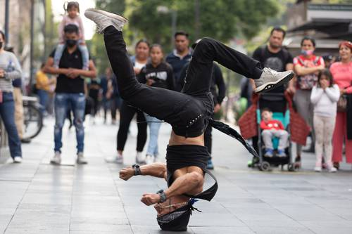

Al finalizar la primaria en el colegio empecé a estudiar mis básicos en el colegio Nuevo San Cristobal, el cambio de primaria a básicos lo recuerdo como un cambio muy grande, sobre todo por las materias nuevas que iba a tener, como contabilidad, matemáticas un poco más complejas.
Una clase que nunca se me dio bien fue artes plásticas, en los 3 años de básicos nunca se me dio bien, por suerte no perdí esa clase, pero mis notas si eran bajas en esa materia.
Fuera del colegio, recuerdo que en ese entonces a mi hermano y a mi nos empezó a interesar el break dance, que es un tipo de baile urbano, esa etapa de mi adolescencia fue muy bonita, ya que era un pasatiempo sano, en el cual nos divertíamos con mi hermano, y otros amigos que poco a poco se fueron interesando por el baile, y gracias a eso me mantuve con buen estado físico durante mi adolescencia.
Igualmente, mi interés por los video juegos siempre ha estado, y en mi adolescencia jugaba mucho con mis amigos, sobre todo juegos de móvil en línea. Seguía instalados juegos en mi computadora y pasara bastantes horas jugando. En ese entonces recuerdo que la velocidad de internet era bastante lenta comparada con las velocidades actuales, una vez, me tarde casi todo el día descargando un juego que pesaba 4Gb, era Skyrim.
